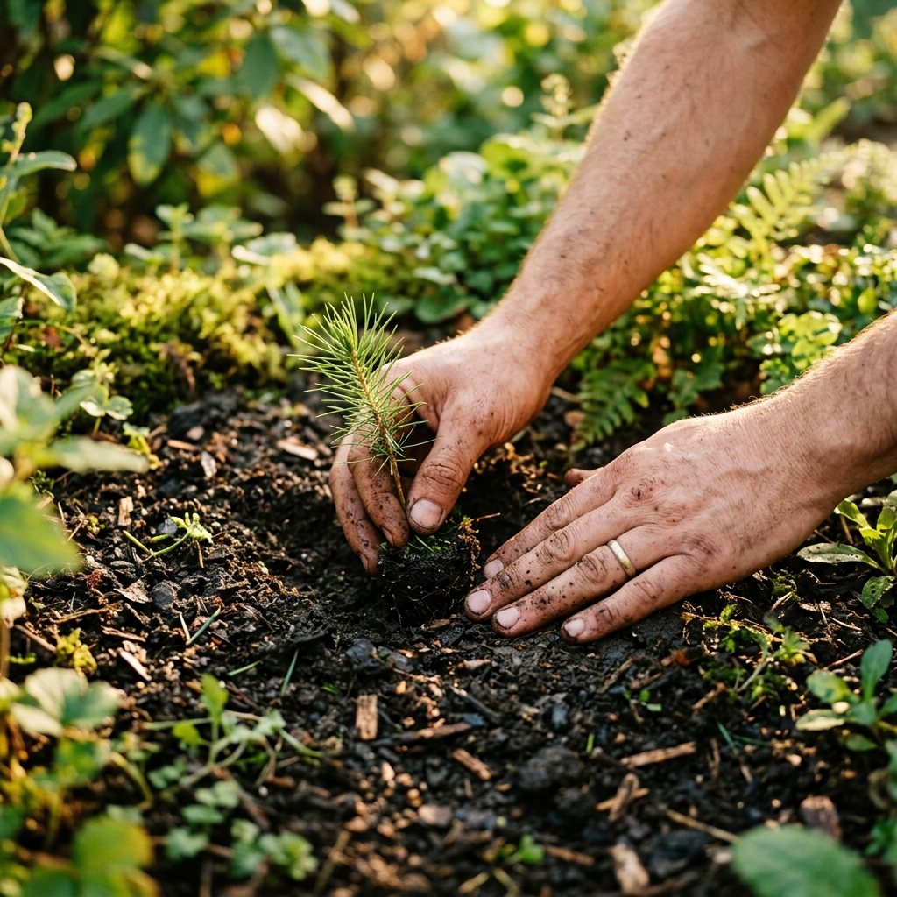
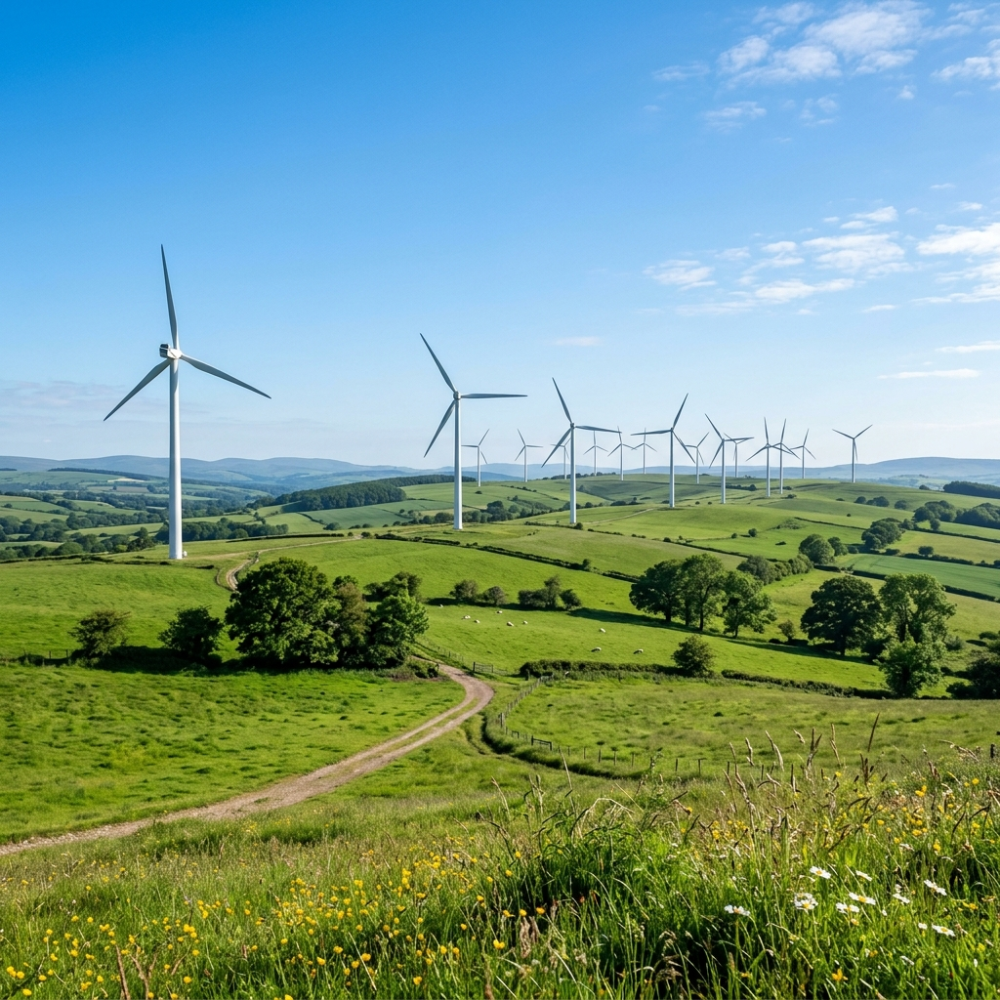
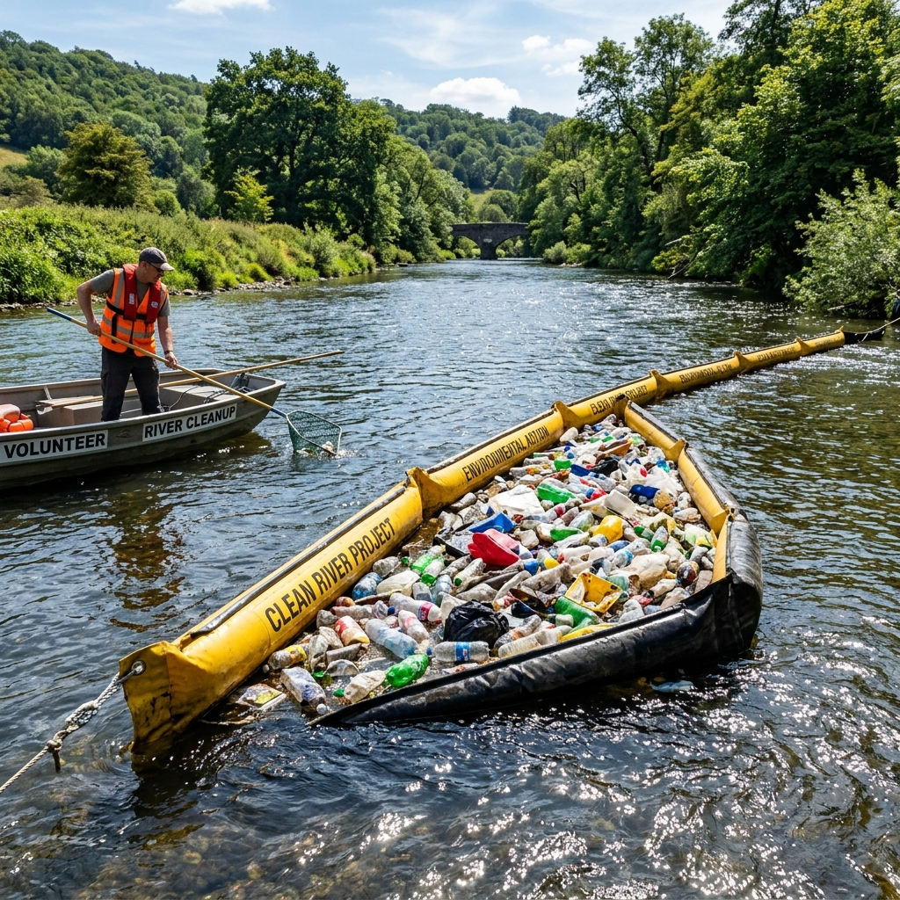
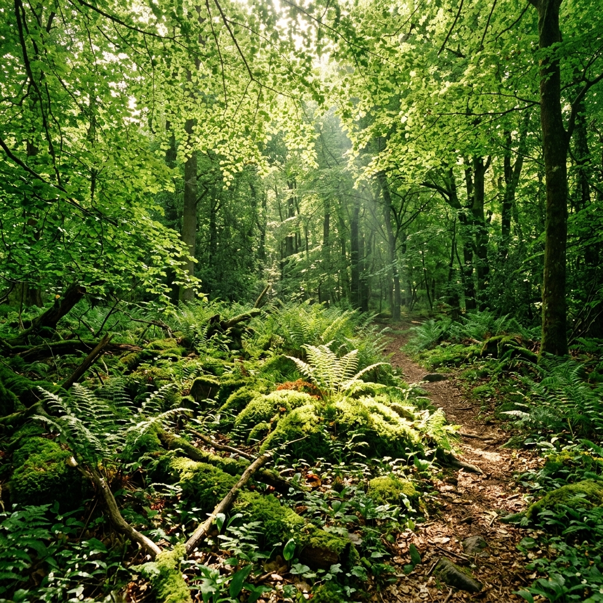

Supports tree planting projects in areas affected by wildfire, deforestation, and habitat loss. Every dollar contributes directly to putting a seedling in the ground.
Support Project
Funding clean energy research, grid modernization advocacy, and legal action to secure emission reduction policies worldwide.
Support Project
Deploys mechanical ocean cleanup systems and river trash barriers to extract plastic waste before it reaches marine sanctuaries.
Support Project
Allows users to purchase verified carbon offsets funding transparent agroforestry, rainforest protection, and clean cookstove creation.
Support Project